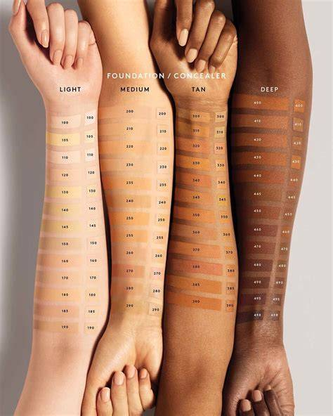

Our Story
Nubian Cosmetics Sa is commited to inclusivity, Passion, creativity, and quality in beauty,Authenticity & Inclusivity: Nubian Cosmetics emphasizes being authentically you—celebrating individuality and uniqueness.
=======About Nubian Cosmetics SA
Glow with confidence
Nubian Cosmetics Sa is commited to inclusivity, creativity, and quality in beauty. Nubian Cosmetics was founded in johannesburg with a vision to celebrate the rich diversity of South African beauty. Inspired by the Strenght and elegance of Nubian heritage, our brand was created to provide inclusive beauty solutions for all.
Our mission is to empower individuals by offering products that highkight natural beauty while embracing cultural identity. We envision a future where every single shade is celebrated, and beauty products are accesible, sustainable and proudly local.
At Nubian Cosmetics, our values are inclusivity, authenticity, and luxuary mad eaffordable. We blend earth-inspired tones with modern formulations, ensuring our products are both stylish and skin-friendly.
>>>>>>> 67a3e25 (Upload website files and styles)Our vision
- Inclusivity: We celebrate diversity and strive to create products that cater to all skin tones and types.
- Quality: We are committed to using high-quality ingredients and maintaining rigorous standards to ensure our products are safe and effective.>/li>
- Authenticity: We embrace our cultural heritage and infuse it into our products, creating a unique and genuine beauty experience.>/li>
- Sustainability: We are dedicated to minimizing our environmental impact by using eco-friendly packaging and sustainable sourcing practices.>/li>
- Luxury: We believe that beauty should be accessible to everyone, and we strive to offer high-quality products at affordable prices.
To empower individuals to embrace their unique beauty through high-quality, inclusive cosmetics.

Nubian Cosmetics Sa is dedicated to creating a never before seen pallete